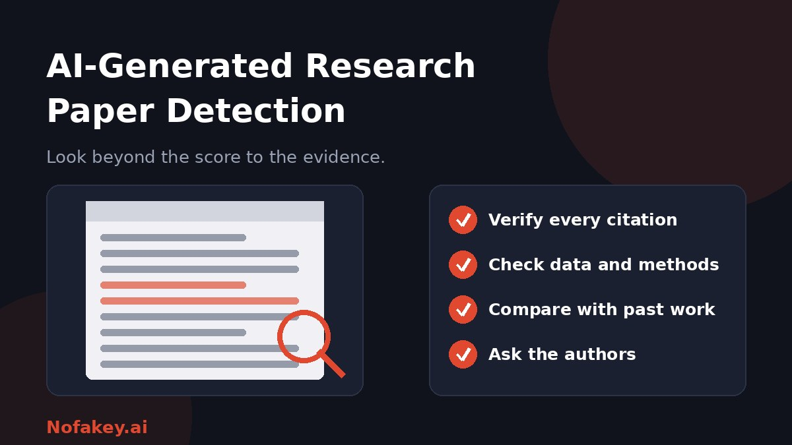

Journals, peer reviewers, supervisors and universities now ask the same question: was this paper written by AI? Detection tools promise an answer, but research writing is a difficult test. This guide explains how AI-generated research paper detection works, where it breaks down, and the stronger checks that protect research integrity without wrongly accusing honest authors.
What AI-generated research paper detection means
Two different things get lumped together:
- Text detection: software estimates how much the writing resembles AI output.
- Integrity checking: people verify that the sources, data, methods and claims are real and consistent.
Only the second can show that a paper is unreliable. A paper can be fully human-written and still be flawed, or heavily AI-assisted and still sound.
How detection tools work
Most text detectors measure statistical patterns, such as how predictable the wording is, and compare them with patterns from known AI and human samples. Some are trained on specific kinds of text, like scientific abstracts, which can help in a narrow setting. Others rely on a hidden signal added by the generator, which we cover in our guide to AI watermark detection. Either way, the output is a probability, not a fact.
Why research papers are especially hard to judge
| Challenge | Why it matters |
|---|---|
| Formal, standardised language | Literature reviews and methods sections use set phrases that can look "machine-like" |
| Non-native English writers | Careful, plain prose may be flagged more often |
| Heavy editing and translation | AI-assisted editing and translation blur the line with AI generation |
| Citations, equations and tables | Much of a paper is not flowing prose, so detectors have less to work with |
| Mixed authorship | Several authors with different styles in one paper |
| Fast-changing tools | Detectors can lag behind new AI models |
For more on reliability in general, see are AI detectors accurate?
Stronger signs than a detector score
- References that do not exist, or real references that do not say what the paper claims. Invented citations are a classic problem with AI-written text.
- Data, figures or statistics that do not add up, cannot be reproduced, or have no source.
- Vague or impossible methods, with steps that could not actually have been carried out.
- Generic discussion that could apply to any study and offers no real insight.
- Odd phrasing and leftover tool text, such as unnatural paraphrases of standard technical terms or stray chatbot wording.
- Inconsistency between sections, or with the authors' earlier work.
- Authors who cannot explain their methods, choices or results when asked.
AI-assisted vs. AI-generated research writing
| Use | Typical view |
|---|---|
| Language editing or grammar help | Often allowed, sometimes with disclosure |
| Translation support | Often allowed with disclosure |
| Brainstorming or summarising sources | Varies. Authors must verify everything |
| Drafting sections of the paper | Restricted or not allowed by many journals |
| Fabricating data, results or references | Research misconduct |
Rules differ between journals, publishers and institutions, so always check the specific policy that applies. Authors remain responsible for accuracy no matter which tools they use.
A fair review workflow for editors, reviewers and supervisors
- Read the paper on its merits first. Judge the argument, evidence and originality.
- Spot-check references. Confirm that cited works exist and support the statements made.
- Check data and methods for plausibility, and request raw data or code where policy allows.
- Use a detector only as a triage clue, and look at which passages were flagged, not just the total score.
- Compare with the authors' previous work for consistency of voice and expertise.
- Ask the authors neutral questions about their process, and request notes, drafts or version history.
- Check the disclosure statement against the journal's AI policy.
- Decide on integrity grounds, document your reasoning, and follow your institution's formal process for any concern.
If you are an author
- Read the journal's AI policy before you submit, and disclose any permitted AI use clearly. Our guide on how to label AI-generated content shows disclosure wording you can adapt.
- Check every reference yourself. Never include a citation you have not read or located.
- Keep your process records: notes, drafts, data files and version history.
- Own the accuracy of every claim, whatever tools helped.
- Do not try to "beat" detectors. Rewriting to dodge a score does not fix integrity problems and can look like concealment.
If your paper was wrongly flagged
- Stay calm and respond in writing, politely and factually.
- Gather evidence: drafts, notes, raw data, code, reference files and version history.
- Explain your process and offer to discuss the work in detail.
- Point out that detector scores are probabilistic and often unreliable on formal academic writing.
- Ask for a human review and for the process to be explained.
- Seek support from your supervisor, research integrity office or a trusted colleague.
Conclusion
AI-generated research paper detection is useful as a screening clue, but it cannot replace careful integrity checks. The most reliable signs are fake or mismatched references, shaky data and methods, and authors who cannot explain their work. Be fair to honest researchers, especially non-native English writers, and be clear about what AI use is allowed. For a quick first read on a suspicious claim, paste it into our free checker, and find more guides on the Nofakey.ai blog.
Frequently asked questions
Can AI-generated research papers be detected?
Sometimes. Detectors can flag text that resembles AI writing, but they are not proof and can be wrong either way. Stronger evidence comes from checking citations, data, methods and the authors’ process.
Why do AI detectors flag real research papers?
Academic writing is formal and structured, with standard phrases, so well-written human papers can resemble the patterns detectors associate with AI. Non-native English writers may also be flagged more often.
What are signs of an AI-generated paper besides a detector score?
Look for references that do not exist or do not support the claim, data or methods that do not add up, generic discussion with no real insight, and authors who cannot explain their work.
Is using AI for a research paper always misconduct?
No. Many journals and institutions allow limited uses such as language editing if disclosed, but rules differ. Generating content or fabricating data, sources or results is a serious problem.
What should I do if my paper is wrongly flagged as AI-written?
Stay calm, gather drafts, notes, data and version history, explain your process, and ask for a human review. A detector score alone should not decide the outcome.
Got a claim or message you want a quick first read on?
Run it through the checker